Colorectal Cancer Screening Completion at a DC Community Health Center
Which patients complete colorectal cancer screening, and which don’t? I looked at three years of records from a community health center to find out.
- 11,348eligible patients, 2023–2025
- 18.8%completed screening
- 12.5–27%completion rose with age
- 15.5–27.3%range across clinic sites
Clinic site had the strongest link to completion (Cramér’s V = 0.147), more than age, insurance or ZIP code. The study recommends cross-site workflow reviews, outreach to newly eligible patients, and documentation audits.
Details
- Author
- Samar M. Abdou
- Measure
- HRSA UDS colorectal cancer screening (CMS130v13)
- Methods
- Chi-square tests, Cramér’s V, stratified analysis
- Tools
- Python 3.12, Jupyter
- Funding
- GWU Knowledge in Action Career Internship Fund (KACIF) grant
- Date
- August 2026
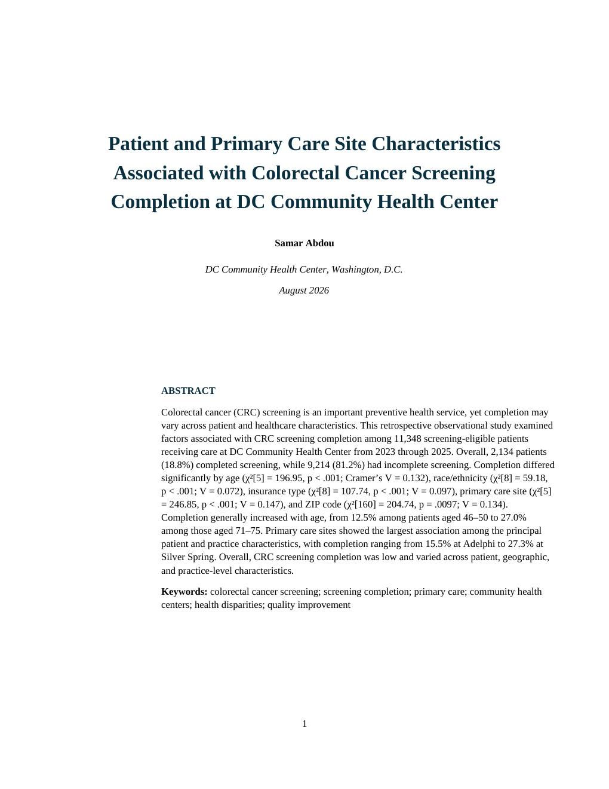
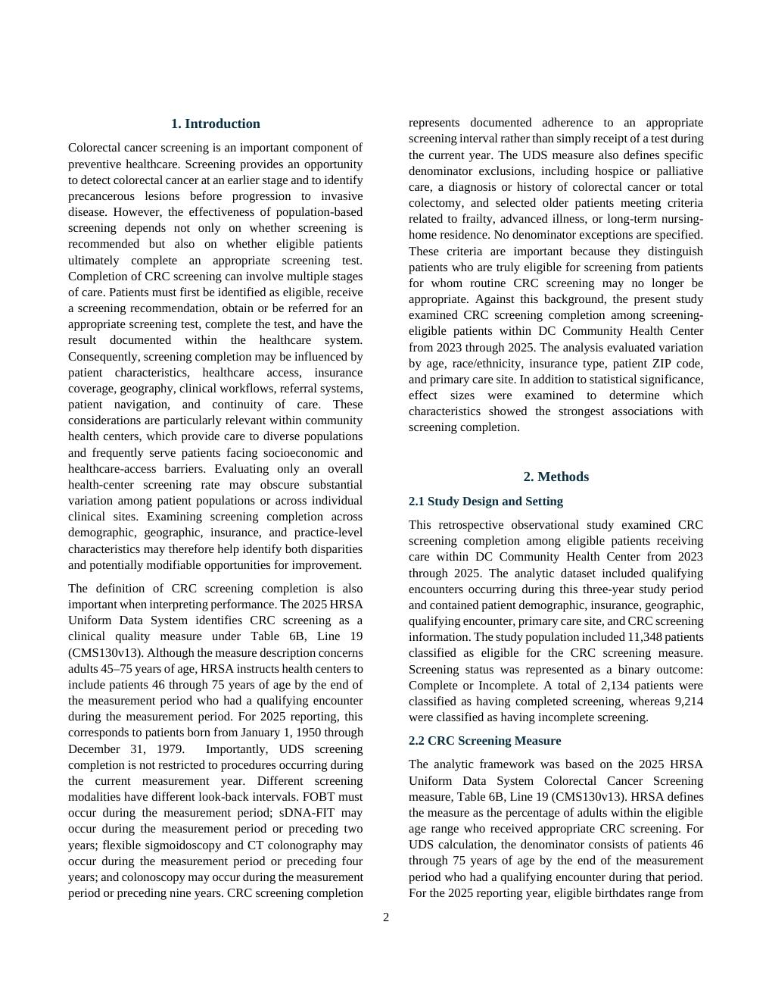
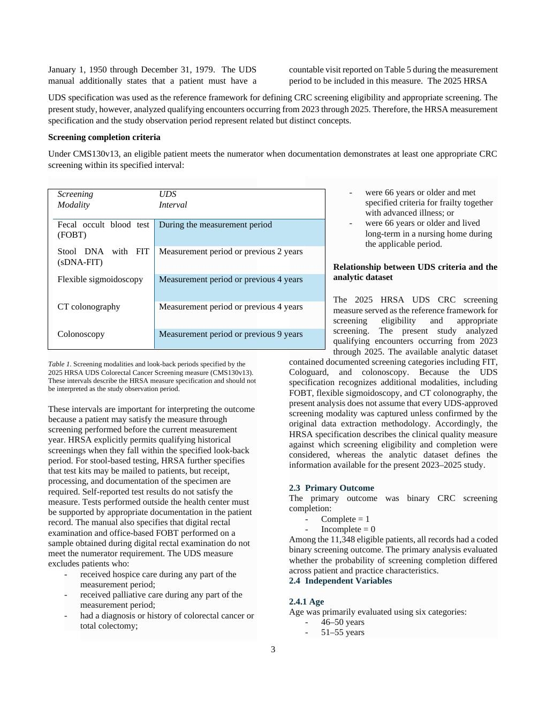
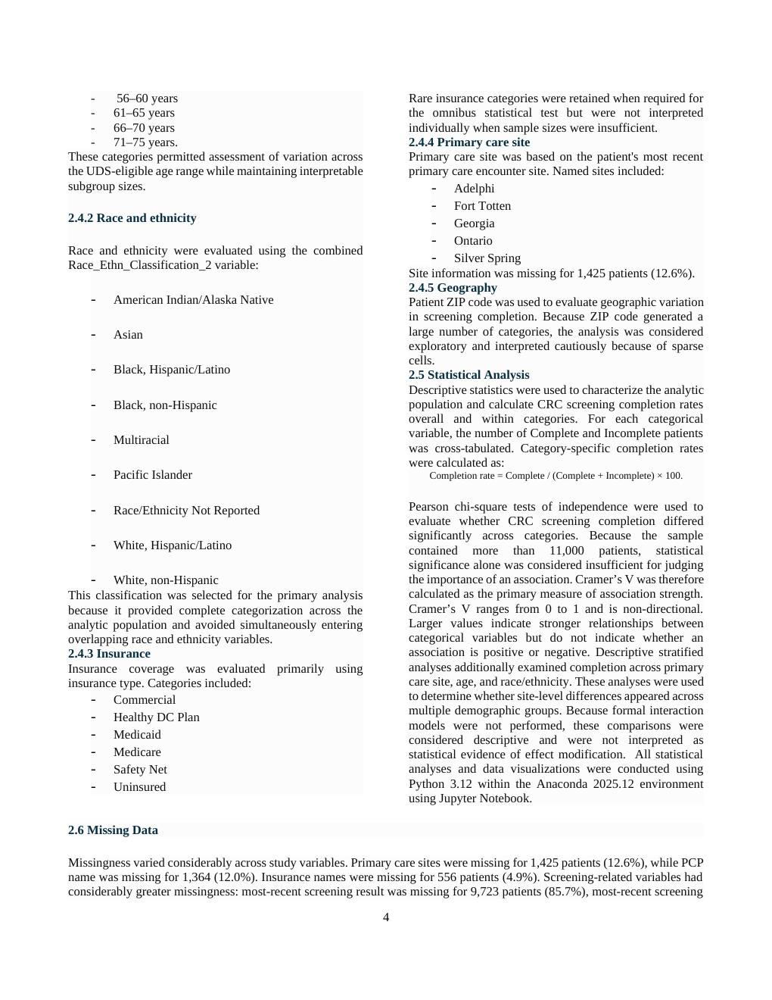
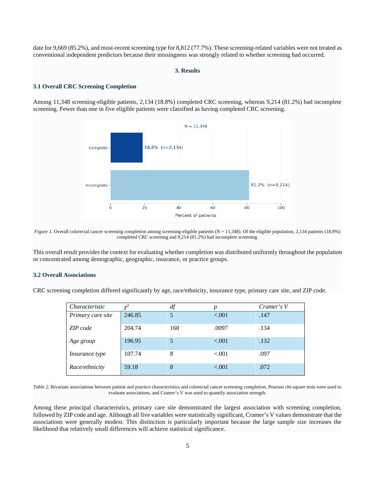
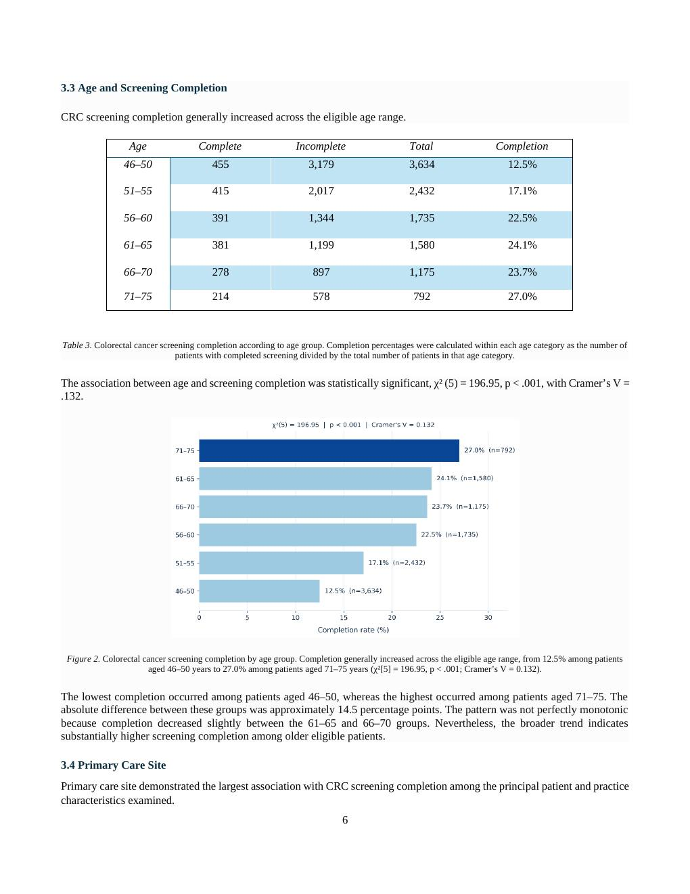
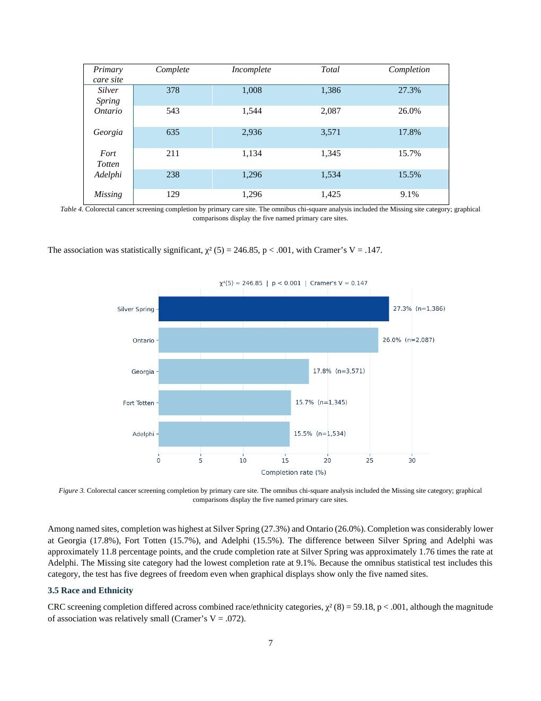
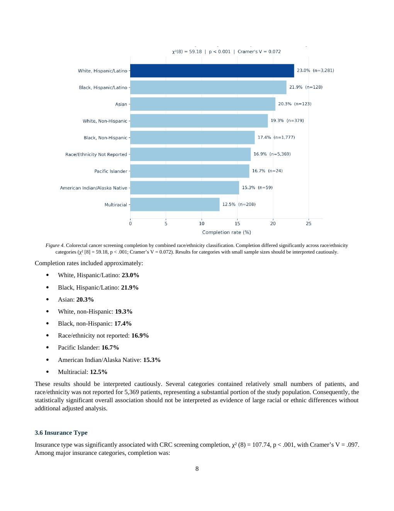
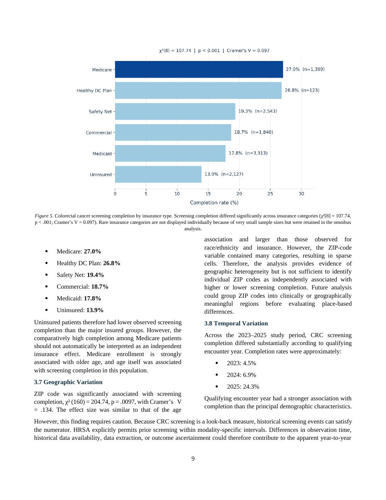
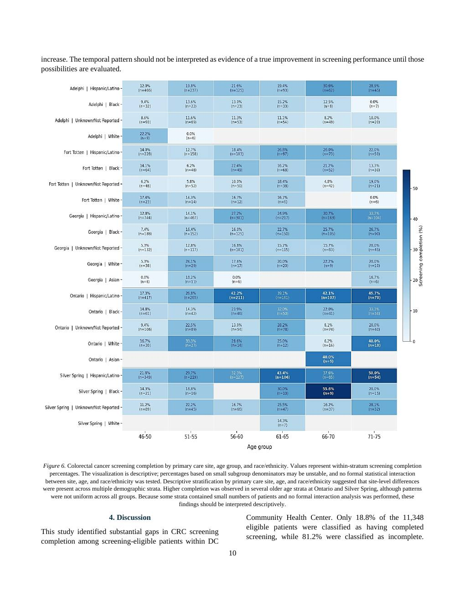
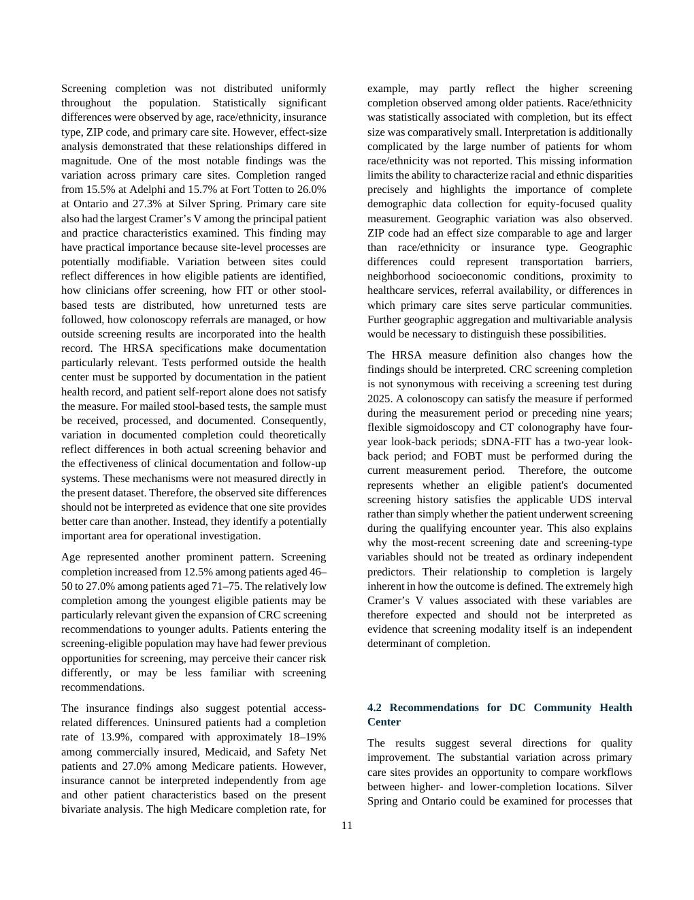
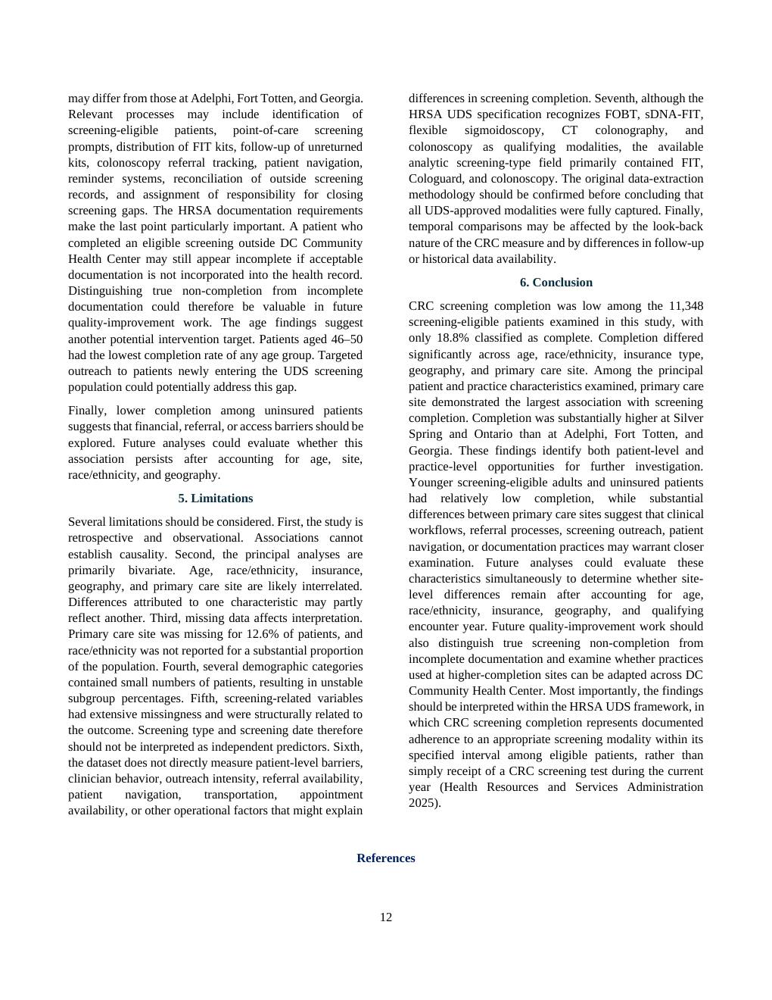
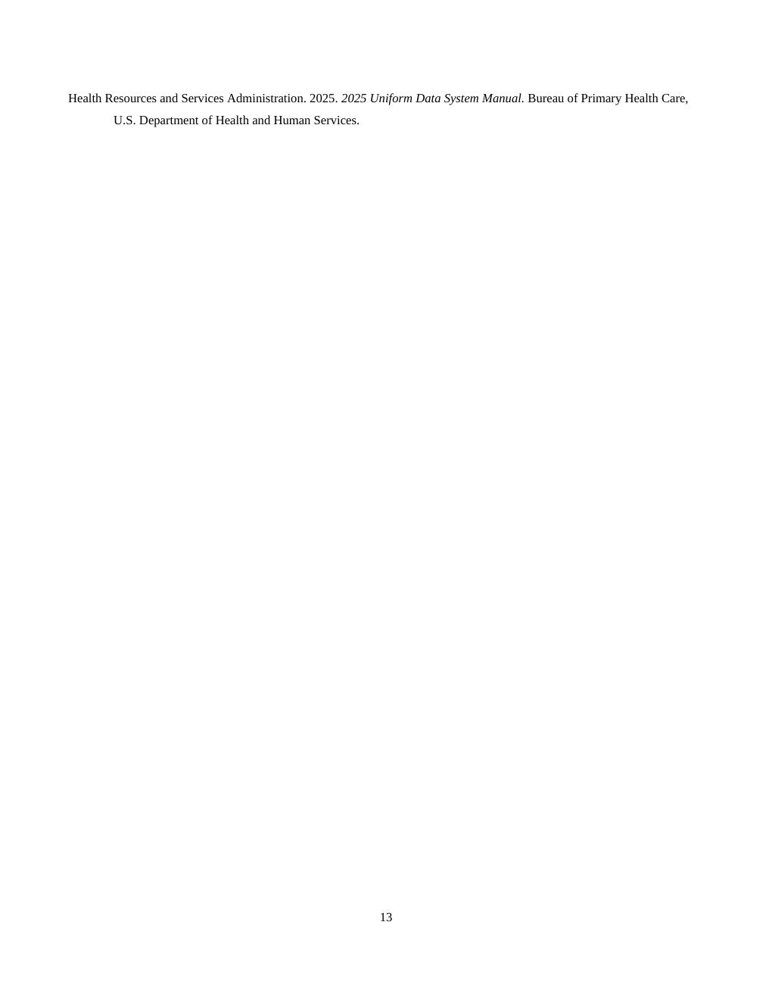